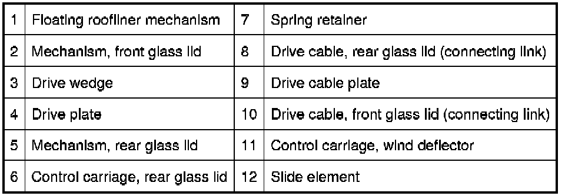
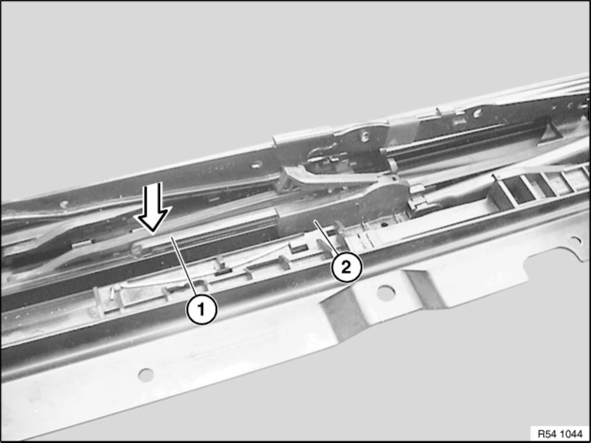
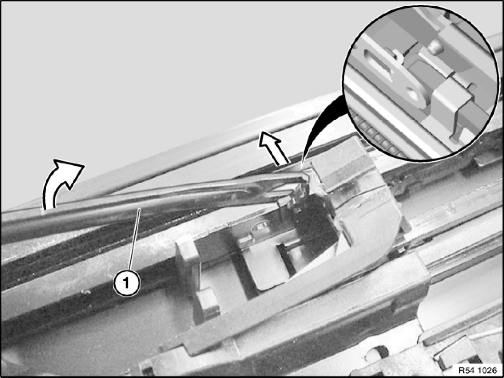

54 10 020 Removing and Installing Mechanism For Front Glass Lid
54 10 020 - Removing and installing mechanism for front glass lid

Necessary preliminary tasks:
- Remove glass slide/tilt sunroof 54 12 211 Removing and Installing Complete Glass Slide/Tilt Sunroof
- Remove glass slide/tilt sunroof lid at front 54 10 170 Removing and Installing Front Glass Slide/Tilt Sunroof Cover
- Remove glass slide/tilt sunroof lid at rear 54 10 175 Removing and Installing Rear Glass Slide/Tilt Sunroof Cover
- Remove front drip moulding 54 13 100 Removing and Installing/Replacing Drip Molding
- Remove drive for slide/tilt sunroof actuation
Overview of glass lid mechanism:

Components 2, 3 and 12 can be replaced with this repair instruction.


Note:
Always replace mechanism for glass slide/tilt sunroof in pairs.
Remove all faulty parts completely from guide rail.
If necessary, lightly grease guide channel.
Warning!
Edges can be sharp. Risk of injury!
Removing upper connecting link (return linkage):
Carefully lever up tabs (1) of cover strip (2) with a screwdriver.
Remove cover strip (2).
Installation:
Cover strip determines alignment of mechanism.
If necessary, slide drive cable plate (1) fully forwards with a screwdriver (stop).
Important!
Risk of damage! Do not move locking lever (1) by force.
Front drive cable plate (3) must be advanced up to stop.
Move drive cable plate (3) only when locking lever (1) is engaged.
Lever out retaining spring on reverse side (2) and remove closing lever.
Carefully lever locking lever (1) from front connecting link out of guide rail (release) and hold in position.

Installation:
Do not move front drive cable plate (2) before locking lever (1) is engaged (risk of damage).
Insert closing lever in rear drive cable plate (3) and install retaining clip.
Move rear drive cable plate (3) until closing lever is engaged in guide rail (see circle for correct position).
Rear drive cable plate (3) must be heard and felt to snap into guide rail, as otherwise the guide lugs of the front drive cable plate (2) will break off.
Front drive cable plate (2) can be removed only when rear drive cable plate 54 10 030 Removing and Installing Mechanism For Rear Glass Lid(3) is removed.
Remove fabric adhesive tape.
Installation:
Replace fabric adhesive tape.
Important!
Locking lever (3) must still be in the lifted-out position before upper connecting link (1) is moved. Risk of damage!
Pull upper connecting link (1) towards rear until drive wedge (2) is no longer guided.
Upper connecting link (1) is free from drive wedge (2) and can be levered out in upward direction.
Feed upper connecting link (1) out of guide rail.
Note:
If necessary, move mechanism (drive cable plate) approx. 2 cm towards rear. Upper connecting link can be fed out and in more easily.

Reposition upper connecting link (1) in direction of arrow and remove from lower connecting link.
Removing drip moulding carrier and lower connecting link:
Slide drip moulding carrier (2) with lower connecting link (1) towards rear.
Remove drip moulding carrier with lower connecting link from guide rail.
If necessary, push slide element (1) towards rear and remove from guide rail.
Adjusting mechanism before installing glass lid:
Insert screwdriver into upper connecting link (3).
Slide drive plate (2) towards rear until drive wedge (1) runs against screwdriver.
Note:
An exact working procedure is required here. Mechanism must run on left and right exactly at one height.
Check that mechanical components on left and right sides have same status.
Note:
Check smooth and noise-free running of kinematics.
Check function.